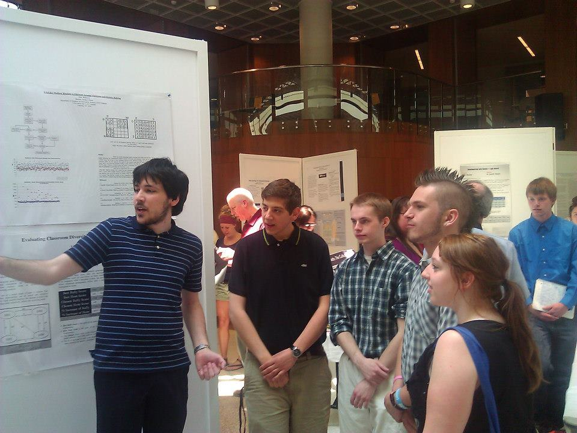

Home
Team
Contact

Robert Olson
Mr. Olson came up with the idea for Project CASSI and leads the entire project.
Robert Szkutak
Mr. Szkutak is currently working on adapting CASSI to identify patterns and trends in student relationships.
John Malayny
Mr. Malayny is working on optimizing the algorithms CASSI uses to place students in a classroom.
Zachary Daily
Mr. Daily is working to ensure that CASSI behaves ethically and does not promote ay kind of student segregation.
Brian Rashty
Mr. Rashty is working on designing a web interface for CASSI.
Justin Soderberg
Mr. Soderberg is working on creating a framework to allow a web service to interact with CASSI.